kMoria in color
how to configure color using kMoriaUtil
how to configure color using kMoriaUtil
To configure color you need kMoriaUtil.prc. You should have received it in the same zip file as kMoria.prc; if you got kMoria some other way, go download the zip file to get kMoriaUtil, then install it
Find your kMoriaUtil and tap on it:
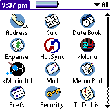
When you enter kMoriaUtil, you'll see four buttons: things, things-to-creatures, colors-to-creatures, and creatures. (There's also a note at the bottom saying that you can press the scroll-down button to return to this screen.)
In short, "things" assigns colors to ASCII symbols; "things to creatures" quickly assigns colors to monsters according to the monster's ASCII symbol; "colors to creatures" quickly (re)assigns colors of monsters that have a color in their name, like "Red Frog"; when you've done all those, "creatures" is for individually assigning colors to any monster that you're not yet satisfied with.
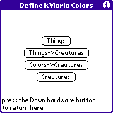
First, you should press Things.
This is what you see when you press Things:
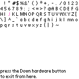
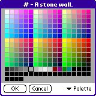
When you select a symbol, you will see a standard palette.
The title bar lets you know that you picked "# - a stone wall".
You can tap on a color to assign it to that symbol.
If you'd rather use RGB sliders instead of a palette,
there's a control in the lower right corner to switch to sliders.
Let's try it.
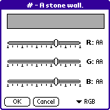
This is what the slider screen looks like. You can set
individual red / green / blue values, and the color is
displayed above (the color selected here is a boring gray).
Once you've got a color selected, from the palette screen
or the slider screen, hit OK.
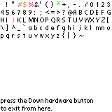
When you hit OK, you go back to where you were before,
the symbols screen. This is what it might look like
after you've chosen colors for a few things: # % $ * J
(granite, softer rock, money, gems, and jelly-type monsters).
If you plan to play with a black background instead of
white, press the Up button
(you know, that hardware button between address and todo)
to toggle the background color:
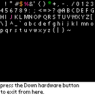
You can press the Up button again to go back to white.
Or you can press the Down button to get back to the main
screen.... let's do that.
Back at the main screen. We assigned colors to a few symbols (above);
for example, I made "%" red and "J" purple. Each letter in the
alphabet represents a kind of monster; J represents jellies.
There is another screen later on where you can color each
kind of monster (white jelly, grape jelly, etc). This is very
tedious because there are many kinds of monsters. So there are two
features in this utility that let you color a bunch of similar monsters
at once. The first is the "Things->Creatures" button, and this
will set every monster to be the color of the letter that represents it.
Since we made J purple, when we hit this button, all of the
creatures represented by J will become purple. (I'll talk about
the second feature later.)
Let's press "Things->Creatures" now.
When you press "Things->Creatures", you get this request for confirmation: "should monsters in Things override all of Creatures, or just the undefined (black/white) creatures?"
I'll explain. Suppose you had already skipped ahead, and colored some particular kinds of monsters. Suppose you made the Black Frog black, and the Red Jelly red. Then you said "man, this is too tedious", and you went back and colored some letters in Things, and you happened to make the 'J' purple and the 'f' green. Then you came here. If you hit All, then all jellies would turn purple like the J, even the Red Jelly. If you hit Undef, then the Red Jelly would stay red, but any other jellies that you had not colored yet would turn purple. (Unfortunately, either way the Black Frog is going to turn green with the rest of the 'f' frogs, because it is black-or-white and the utility, not being very smart, thinks it is undefined.)
Since we have not colored any individual kinds of creatures yet, it doesn't matter whether we use All or Undef. Let's press All.
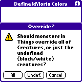
Ok, we've pressed Things->Creatures, and we told it to set all the creatures according to the color of their letters. Let's skip ahead just for a second, to the fourth button, Creatures. It will display the results of coloring the creatures.
This is what you see if you press Creatures now:
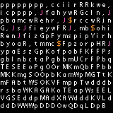
This is also
the screen where you would select a specific kind of monster to
be colored individually, but we're not going to do that yet;
we're just here to look at it.
Let's go back to the main screen (hit the Down button
to get out of here).
Back in the main screen. I mentioned there were two features to
speed things up; I'll explain the second one now. As you might
already know, Moria has a lot of monsters that have color-words
in their names, like White Jelly and Red Frog and so on.
Clearly there should be a way to say "make the White things white and
the Red things red"... and to say what color "white" is.
Well, here is the way:
Press "Color->Creatures".
This is where you go when you press "Color->Creatures".
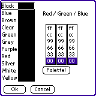
At the left there is a column showing the results on white background,
and a column showing the results on black background, which right now
is black on black.
Tap on the color name to select that color. Then, you can either
set the little R/G/B controls here, and watch the text change as
you do so, or, you can tap Palette to select any color from the palette
(the same kind of palette that you saw before).
I will just show you the results of setting each color-word
to some color that I deem reasonable for a dark background.
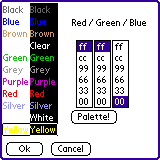
Here we are, still in "Color->Creatures", and I have set all of
the colors for the sake of example.
("Black" is now set to a dark gray... FYI, any color
that you leave as true "000000" black will be drawn in WHITE if you
are playing on a dark background, and you may have noticed above
that that will happen on the Things and Creatures screens
too when you set the background to black.)
Let's hit Ok because we're done here.
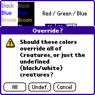
We hit Ok in the color-to-creatures screen, and we see the same
sort of request for confirmation.
This time it does matter what I
press. Remember that earlier in this little demo, I set "J" to purple,
and then I told it to set all monsters to the color of their letters.
So right now all jellies are still purple. I don't want the Green
Jelly and the Red Jelly and the White Jelly and the Yellow Jelly to be
purple! So let's hit All.
Ok. We've been through the first three steps: Things, Things to creatures, and Colors to creatures. The fourth button beckons.
Let's go look at Creatures now and see how much is colored.
We're in the Creatures screen now and the display background is set to
black (remember you can toggle that with the Up button).
You can tap on the symbol of a monster to change that monster's
color - let's pick the very first one, p...
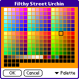
We selected the first p, which turns out to be a Filthy Street Urchin, as you can see by the titlebar. I've selected a new color for it, orange. I'll hit Ok now.
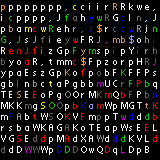
And the p in the upper left corner is now orange. You can see how
this might be a bit tedious, eh.
Let's leave things as they are for now, and go look at kMoria.
I hit the Applications silkscreen button to go back to the launcher. I'll start up kMoria now.)
Here we are in kMoria.
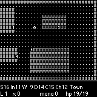
(Remember, if you haven't set the Preferences yet,
go to the far right menu, select Preferences, and check the Color checkbox
so that you'll be using the colors you just defined. In the same place,
you can set the background to black, or leave it white if you prefer.)
Well, I see that the town looks boring, because there are still
many un-colored symbols.
I'll go back to kMoriaUtil and set a few more things
(123456.<>pppp) and then return to kMoria.
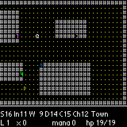
This is the same town, after I've set colors for more of the symbols. I'll walk around in the town so that you can see some more.
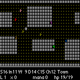
Notice that I set some of the p's to red so that I can tell which ones to avoid and which ones are harmless.
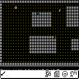
I'm still walking around in the town, and I just found the stairs. Let's go down into the dungeon.
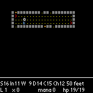
Here we are in the Mines of Moria. "Weather is lovely - Wish you were here" (Let's switch to the larger font.) There's a kobold...
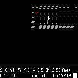
Elsewhere. That white w really is a white worm mass. The gold ($) and the easier-to-dig rock seams (%) are nicely colored.
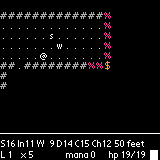
By the way, if you want to see the %'s, go to Preferences and turn on "Highlight/notice mineral seams". If you don't want to see them, leave it off.
The colors are stored in kMoriaColorDB.pdb. So, if you want to send your colors to a friend, beam them that database. (There are various apps you can use for beaming arbitrary databases... I suggest trying Filez, which is freeware. Install Filez on your own device beforehand. Beam the Filez application to your friend using the default application launcher, and then use Filez to beam any database you like.)
The kMoriaColorDB database is owned by kMoria, and not by the utility application kMoriaUtil. So you'll be able to delete kMoriaUtil when you are done with it and not lose your colorings. (I've probably forgotten to set the backup bit on kMoriaColorDB, though, so you may find that it doesn't get backed up in Windows. If my absentmindedness distresses you, Filez will let you turn on the backup bit for an arbitrary database.)